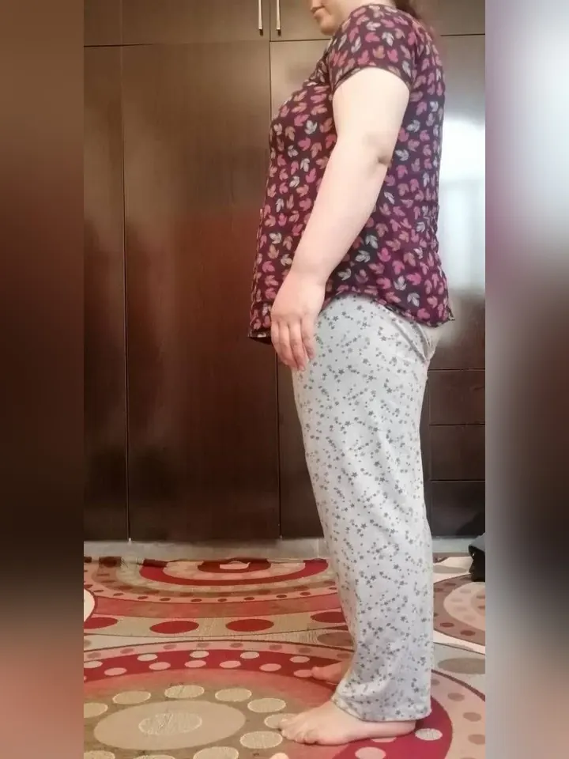
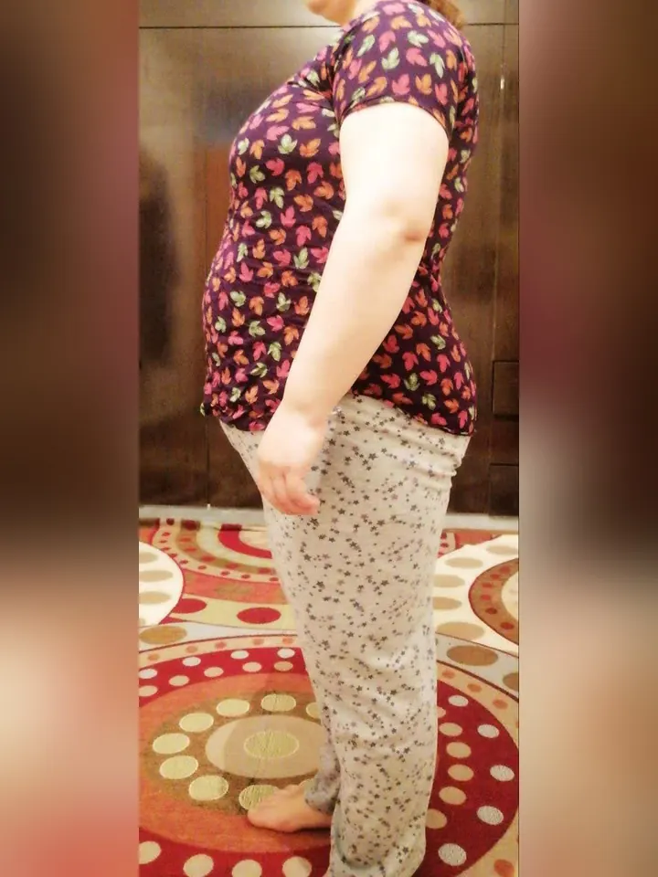

پیشغذاهای ویژه
قبل از وعدههای اصلی از پیشغذاهای ویژه استفاده میکنید؛ بدون فشار و بدون احساس محرومیت.
کاهش وزن اصولی و بدون بازگشت؛ با برنامهای علمی و شخصیسازیشده که متناسب با بدن و سبک زندگی شما طراحی میشود، با پشتیبانی تیم پزشکی در کل مسیر.
ایتایزیلی روشی است برای لاغری بدون گرسنگی، بدون ورزش، بدون دارو و بدون بازگشت وزن. در این متد قبل از وعدههای اصلی از پیشغذاهای ویژه و سوپرفودهای هوشمند استفاده میکنید که اشتها را کنترل میکنند و بدن را وارد حالت چربیسوزی طبیعی میکنند.
قبل از وعدههای اصلی از پیشغذاهای ویژه استفاده میکنید؛ بدون فشار و بدون احساس محرومیت.
اشتها را کنترل میکنند و بدن را وارد حالت چربیسوزی طبیعی میکنند.
با غذای سفره و تنوع غذایی بالا لاغر میشوید، بدون حذف گروههای غذایی.
لاغری بدون گرسنگی و بدون محرومیت، با یک وعده آزاد روزانه.
قد و وزنت رو وارد کن تا شاخص توده بدنی (BMI) محاسبه بشه و بدونی الان بدنت در چه محدودهای قرار داره.
BMI یک شاخص عمومی است و جایگزین مشاوره پزشک نیست.
برنامه مناسب من چیه؟محاسبه در همین صفحه انجام میشود و اطلاعات فرم ارسال نمیشود.
اگه چند بار برای لاغر شدن اقدام کردی و هر بار با یه عالمه قانون و محدودیت روبهرو شدی، حق داری خسته شده باشی. اینجا قرار نیست با خودت بجنگی؛ قراره با این بدن و این سبک زندگی، سالها خوب زندگی کنی.
کاهش سایز واقعی و همیشگی، با کوچکسازی اصولی سلولهای چربی؛ تغییر تدریجی با نتایج ماندگار.
یک مسیر کاملاً اختصاصی، منطبق بر شرایط بدنی و زندگی پرمشغله شما.
لاغری بدون گرسنگی و جدایی از سفره خانواده، با یک وعده آزاد روزانه؛ سبک زندگی ساده با انتخابهای هوشمند.
بیدار کردن چربیسوزی طبیعی بدن با تنظیم هورمونها، بدون هیچگونه قرص یا مکمل.
لاغری همراه با حفظ زیبایی چهره، بدون افت انرژی و با ذهنی آرام و بدون استرس.
تفاوتها را کنار هم ببین و ببین چرا این مسیر برای خیلیها پایدارتر بوده است.
| ویژگیها | ایت ایزیلی | فستینگ | کالریشماری |
|---|---|---|---|
| بدون گرسنگی | دارد | ندارد | ندارد |
| بدون عوارض | دارد | ندارد | ندارد |
| اجرای ساده | دارد | ندارد | ندارد |
| پشتیبانی پزشکی | دارد | ندارد | ندارد |
چند سؤال کوتاه درباره بدن، سبک زندگی و هدفت؛ تا مسیر دقیق خودت مشخص شود.
برنامه علمی و شخصیسازیشده متناسب با شرایط بدنی و زندگی پرمشغلهات، بدون آشپزی پیچیده.
تیم پزشکی و پشتیبانها در تمام مسیر کنارت هستند و پیگیری مستمر دارند.
با کشیدن نوار وسط تصویر، تغییرات شگفتانگیز رو ببین و داستان هر نفر رو انتخاب کن.
نتایج هر فرد بر اساس شرایط بدنی و میزان پایبندی متفاوت است.


قبل بعدخیلی خوشحالم با این برنامه آشنا شدم؛ بعد از کلی رژیم سخت و دارو که نتیجه نداد، الان ۳۲ روزه طبق برنامه پیش میرم و ۸.۵ کیلو کم کردم (سایزم از ۱۰۷ به ۱۰۳ رسیده). علاوه بر کاهش وزن، درد زانو و کمرم هم برطرف شده و واقعاً راضیام.
از ماه تیر با وزن ۸۵ کیلو شروع کردم و الان به ۶۴ کیلو رسیدم؛ حدود ۲۱ کیلو کاهش وزن داشتم. همه از تغییرم تعجب میکنن و خودم هم از نتیجه ایتایزیلی خیلی راضیام.
بعد از سالها امتحان رژیمها و داروهای مختلف، با ایتایزیلی ۳۲ کیلو کم کردم؛ بدون گرسنگی و محرومیت. همهچی آروم و پایدار پیش رفت و از نتیجه خیلی راضیم.
فقط در ۱۰ روز با ایتایزیلی ۱ کیلو کم کردم؛ چیزی که قبلاً یک ماه طول میکشید. بعد از ۲۰ سال، مشکل گوارشم بهتر شده و بدون گرسنگی وزن کم میکنم. از نتیجه واقعاً راضیم.
پشتیبانی پزشکی که دارم واقعاً حس میکنم مثل یه خواهر دلسوز کنارمه. بدون تردید میگم ایتایزیلی از نظر سلامت، علمی بودن و تعهد کاری کمنظیره و نتیجهبخشه. الان حال جسمی و روحیم عالیه و سرشار از اعتمادبهنفس و امیدم.
من طی شش ماه با برنامه ایتایزیلی ۲۷ کیلو وزن کم کردم و از ۱۴۶ به ۱۱۳ کیلو رسیدم. نتیجه آنقدر ملموس بود که سایز کمربندم از ۲۲ سوراخ به ۱۲ سوراخ رسید! این مسیر بدون حمایت تیم قوی و پشتیبانهای ایتایزیلی ممکن نبود.
با افتخار اعلام میکنم تا امروز ۳۸ کیلو وزن کم کردم و تا آخر هفته به رکورد ۴۰ کیلو میرسم. از قدرت و همراهی تیم ایتایزیلی بینهایت سپاسگزارم. قبل از شروع کمردرد داشتم اما حالا کاملاً برطرف شده.
نتایج هر فرد بر اساس شرایط بدنی و میزان پایبندی متفاوت است.
مقالههای علمی و کاربردی درباره لاغری، تغذیه، پزشکی و روانشناسی.
ایت ایزیلی یک روش لاغری کاملا جدیده که بر مبنای راحتی و احساس لذت افراد طراحی شده. در این روش با افزایش چربیسوزی طبیعی، بدون رژیمهای محدودکننده و پیچیده و بدون نیاز به ورزش به کاهش وزن اصولی و بدون بازگشت دست پیدا میکنید. شما با غذای سفره و تنوع غذایی بالا، بدون احساس گرسنگی به آسانی لاغر میشوید.
شما هر ماه ۴ تا ۶ کیلو کاهش وزن آسان رو تجربه میکنید و کاهش سایز چشمگیری خواهید داشت.
بسیاری از روشهای لاغری صرفا بر پایه محدودیت یا حذف مواد غذایی، کاهش وزن رو رقم میزنن؛ اما ایتایزیلی بدون حذف هیچگونه ماده غذایی و با در نظر گرفتن احساس راحتی شما طراحی شده. بنابراین تا رسیدن به اندام دلخواهتون رهاش نمیکنید.
بعد از اینکه به وزن دلخواهتون میرسید هم، به دلیل اثربخشی ریشهای این متد (تنظیم متابولیسم، تنظیم هورمونی، کاهش سایز سلولهای چربی، تنظیم میکروبیوم روده و حتی تاثیر بر رفتار تغذیهای شما) بازگشت وزن اتفاق نمیافته.
خیر! ایتایزیلی بر پایه حذف غذا و گرسنگی و محرومیت نیست. با غذاهای روزمره و خوشمزه میتونی لاغر بشی، یعنی هم سیر میشی، هم لاغر. اگه احساس گرسنگی داشتی باید حتما به پشتیبانت اطلاع بدی.
برنامه ایتایزیلی بر پایه اصول علمی و تجربیات هزاران شرکتکننده در شرایط و سنین مختلف طراحی شده. علاوه بر پشتیبانی تخصصی و پیگیری مستمر، اگر پس از طی دوره به نتیجه مورد انتظار نرسیدید، بازگشت وجه بهصورت ۱۰۰ درصدی تضمین میشود. این تعهد، اطمینان ما به اثربخشی متد ایتایزیلی رو نشون میده.
آزمون لاغری رو بده تا ببینیم برنامه ایتایزیلی چطور میتونه متناسب با بدن و زندگی تو طراحی بشه.